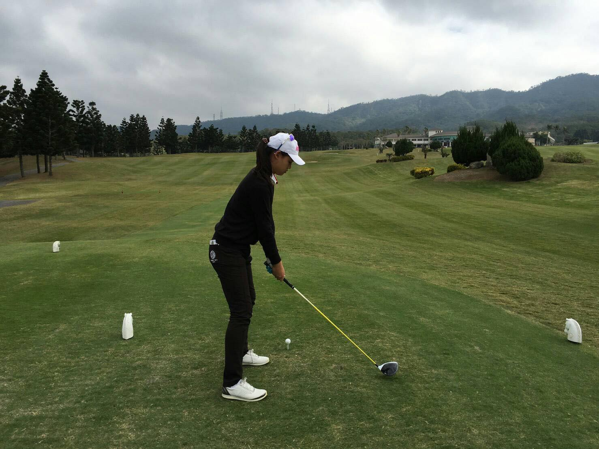
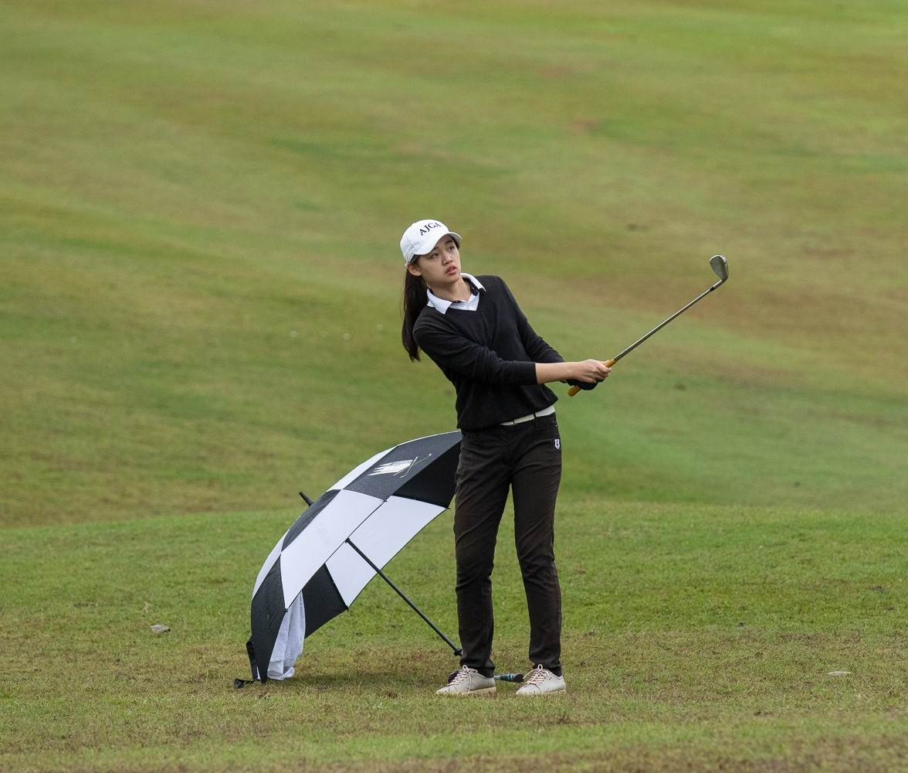
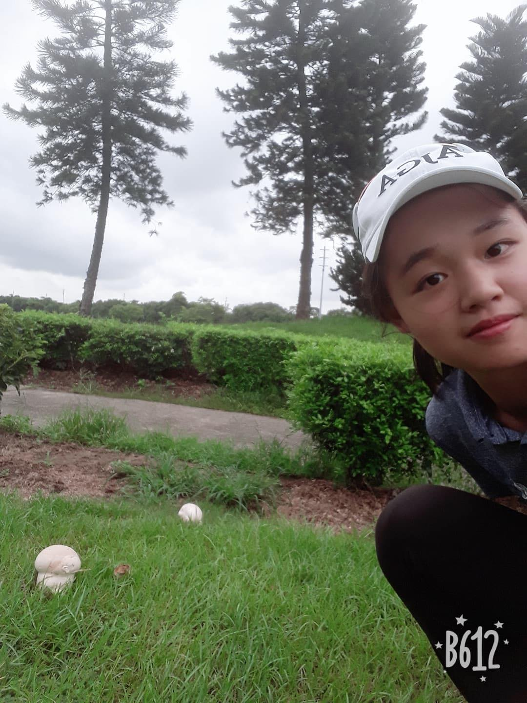
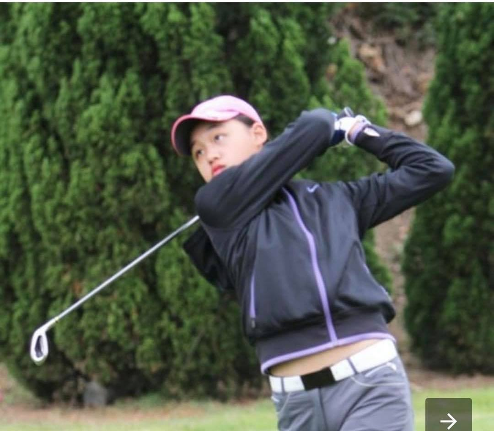
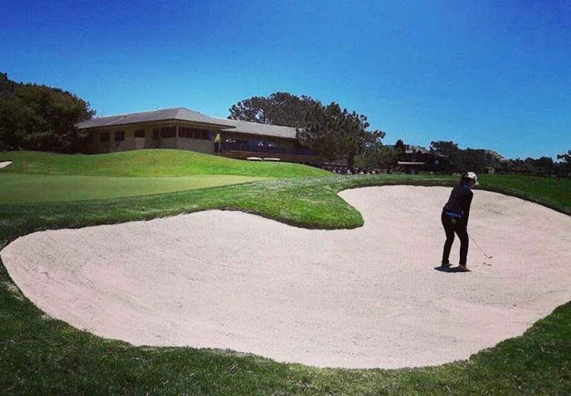

Steffi's Golf Diary







About me:
Hello there! My name is Steffi, currently a senior studying at Pacific American School. I have been playing golf for 10 years (since 2nd grade). As a student-athlete, I attend school and study during the weekdays, while spending my weekends mainly on golfing. I will be playing for Carnegie Mellon University's varsity golf team in Fall 2020. This website will feature my experiences and other fun facts about golf. I intend to use this platform to encourge more people to join the golf community, as well as providing useful information to those who are interested. Golf has played a huge part of my life, and I am so ready to take you along this journey!
Golf facts about me:
- My favorite golf club is my driver, because my driving distance is relatively longer compared to other women golfers.
- My least favorite golf club is my chipping club. I am very bad at bunker shots and is urgently in need of an expert to guide me. If you are one of them, please hmu!
- I prefer to practice on my own, unlike most people. Even though I get lonely sometimes, I think practicing alone allows me to fine-tune my skills and try out new techniques more efficiently.
- I have attended the Junior World Golf Championship (the largest international junior golf event in the world!) for 2 times. I represented Taiwan for the tournament, and met different players from all over the world (check the 1st pic above!).
- During the summer in 2018, I traveled to 8 different US states within the 2 months. I participated in a total of 6 tournaments that were all in different places.
My Favorite Quotes About Golf
- "If you think it's hard to meet new people, try picking up the wrong golf ball." -- Jack Lemmon
- "Golf is a compromise between what your ego wants you to do, what experience tells you to do, and what your nerves let you do." -- Bruce Crampton
- "Mistakes are part of the game. It's how well you recover from them. That's the mark of a great player." -- Alice Cooper
- "No matter how good you get, you can always get better — and that’s the exciting part." -- Tiger Woods